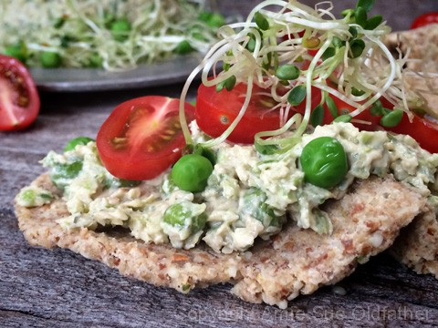

Sweet Pea & Brussel Sprout Crostini

Never be afraid to bring different components together to create new and exciting dishes. As explained before, my recipe mashups are created to give you inspiration. Perhaps to break that thought process that eating healthy has to be boring and get you to start thinking outside of the box. :)
Ingredients:
Recipes:
Extras:
- Sliced tomato
- Diced onion
- Sprouts
Preparation:
- Create the flatbread recipe a day in advance due to the drying process.
- Prepare the Raw Sweet Pea & Brussel Sprout dip the day before or day of creating the crostini.
- Spread the dip on the flatbread, layer with diced onions, sprouts and diced tomato.
- Eat and Enjoy!
© AmieSue.com